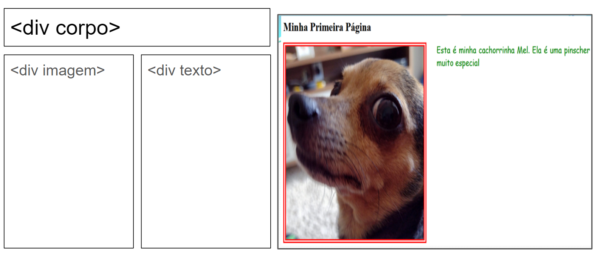
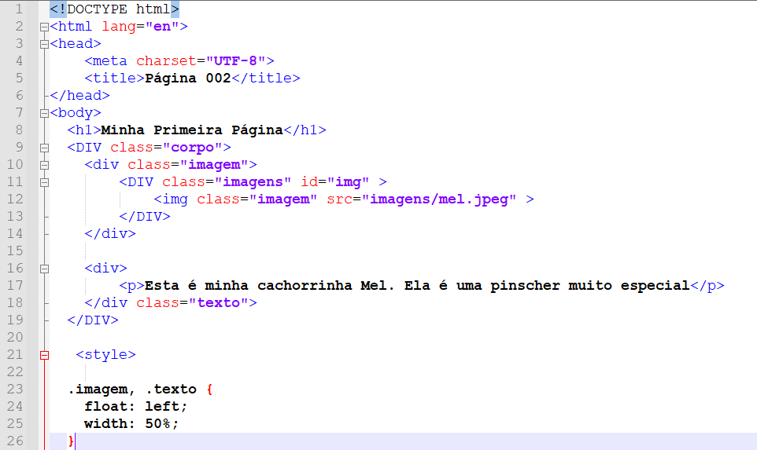

Usando a tag de divisao

1. A divisão é muita usada para separar elementos em uma unica página;
2. A formatação das divisões é feita com o uso de CSS
3. Cada divisão pode ter uma identificação ID ou pertencer a uma classe

4. A seguir o códico HTML com CSS para colocar uma divisão ao lado da outra
